The Relationship Between Radical Hindus and Inceldom
Sexual frustration is a large part of what drives the radical hindu politics in India.
Built upon an incel mentality that the strong alpha male Muslim Chads will take over.
Source: Anand, Dibyesh. Hindu nationalism in India and the politics of fear. Springer, 2016. pages 49-50
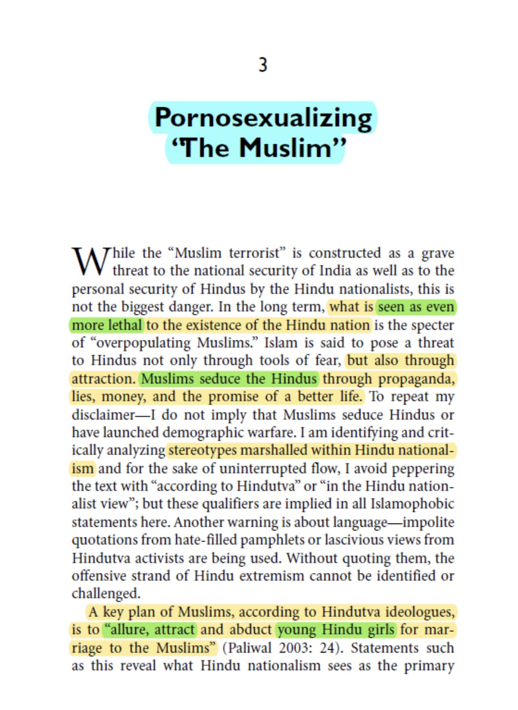
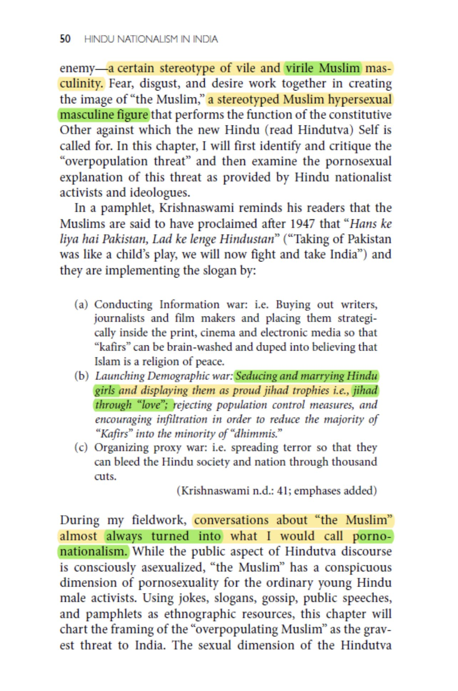
The radical hindu is extremely sexually insecure, due to what they perceive in the Muslim man; like those "virgin vs Chad" comics.
There is a huge belief among their intellectuals that the alpha more-fertile Muslim man will "steal their" hindu women.
(Anand, 2016, pg 51-52)
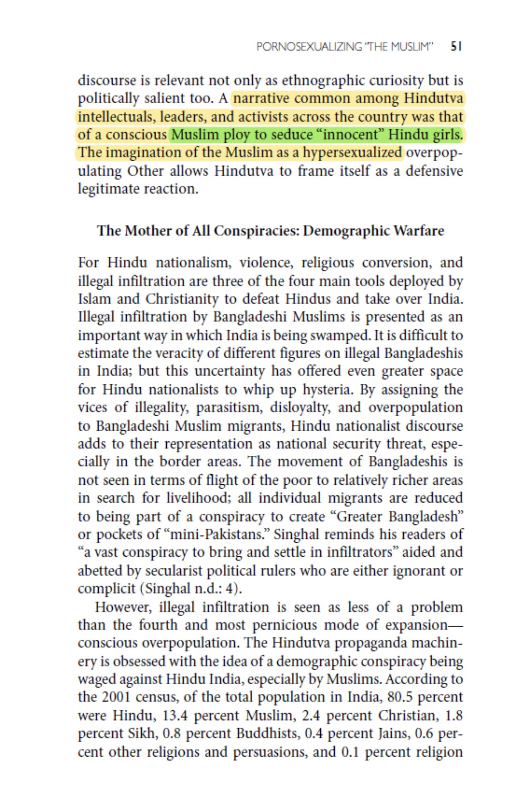
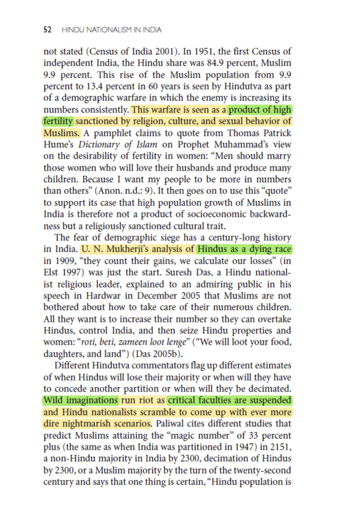
There is constant fear and paranoia about the Chad Muslim alpha male. There is a stereotype that Muslim men are more handsome, and thus Hindu women will choose a Muslim man and stay away from hindu boys.
(Anand, 2016, pg 63-64)
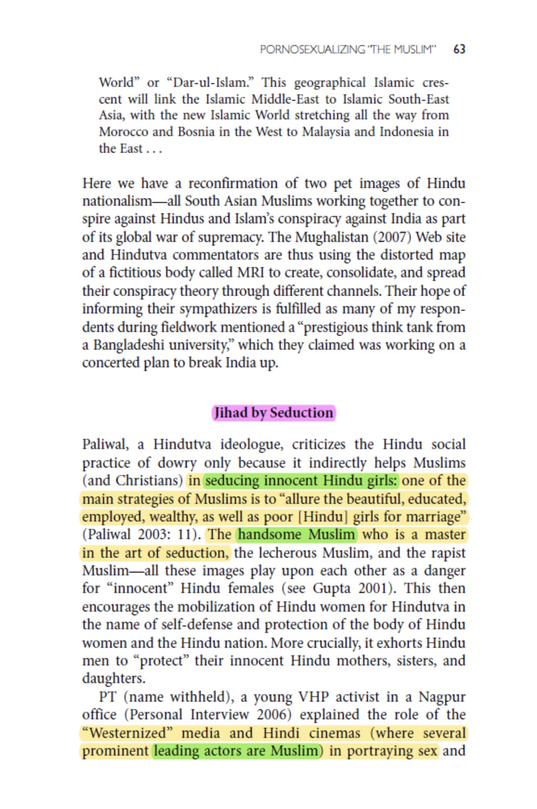
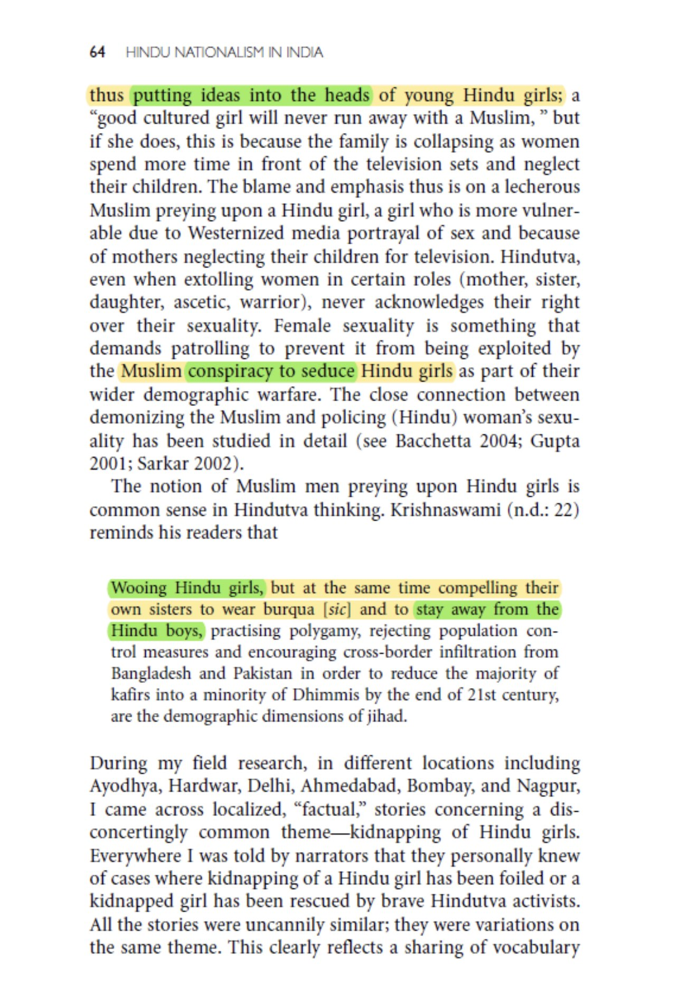
The sexual insecurity is so extreme among radical hindus, that anytime a hindu girl falls in love with a Muslim alpha male, and converts, they believe she is "being kidnapped" and try to "rescue" her, and there is a big conspiracy by these Muslim Chads.
(Anand, 2016, pg 65-66)
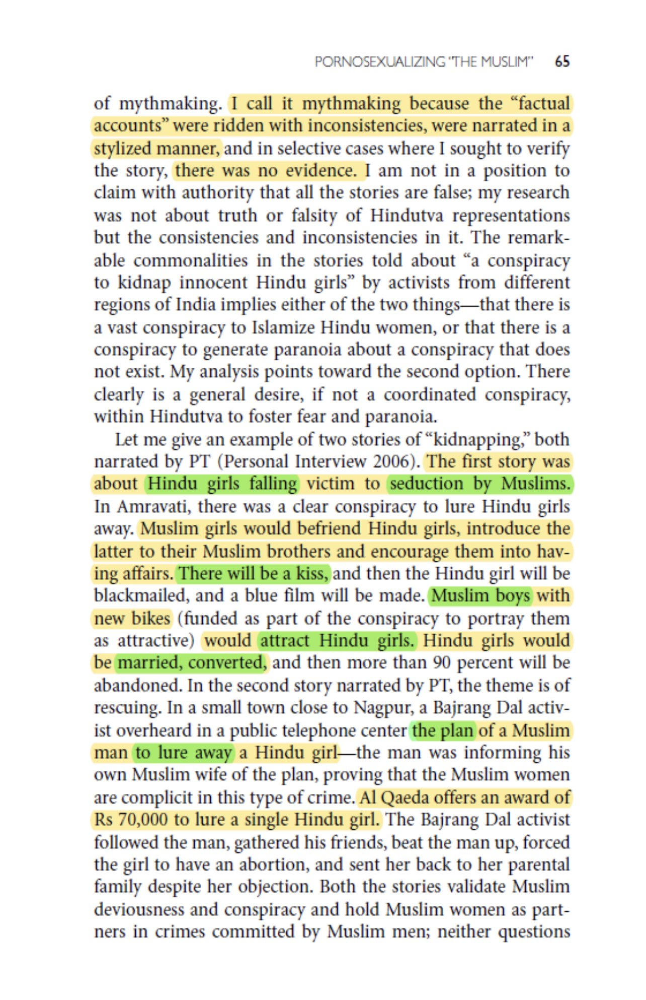
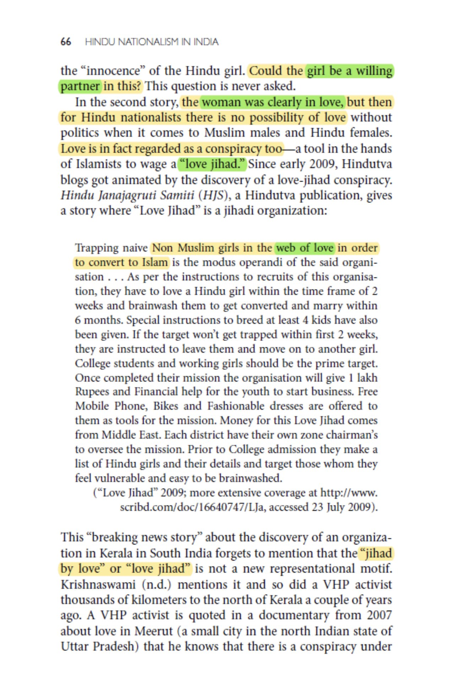
Ironically being an incel is seem as a virtue among hindu radicals, radical hindus often share stories of rape to entertain each other and as a form of "fun".
Radical hindu men also have detailed sexual fantasies about the Chad Muslim men.
(Anand, 2016, pg 75-76)
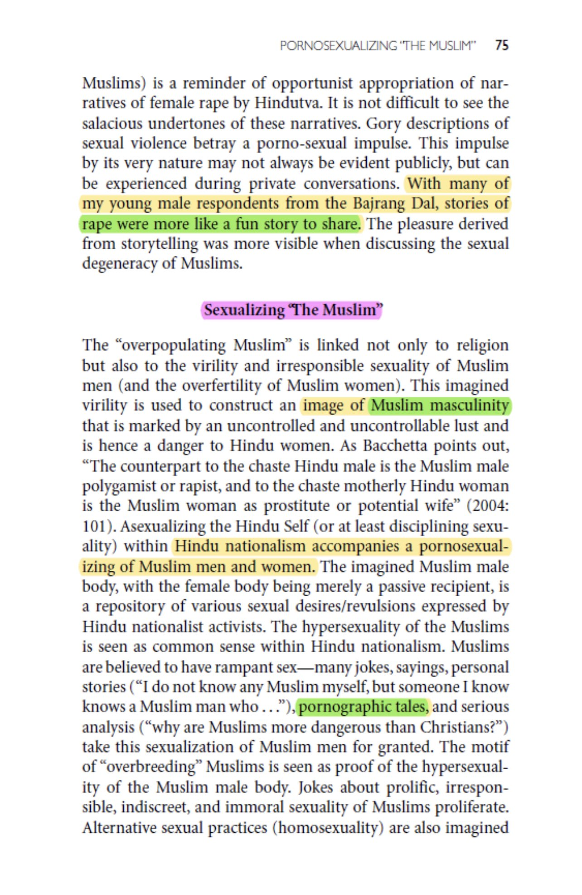
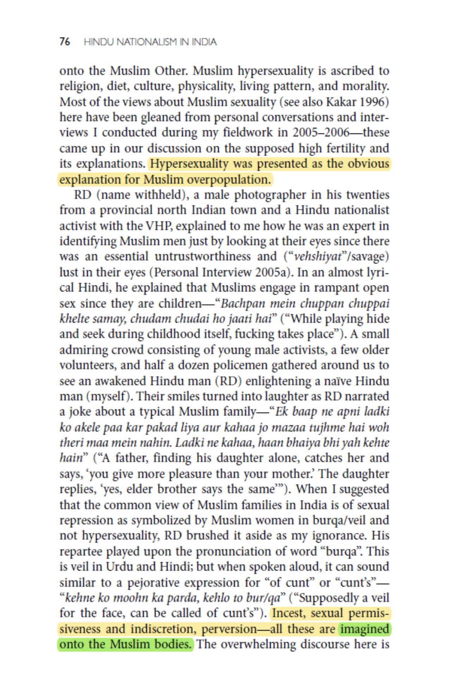
The average radical hindu male is not very successful in life, having no jobs, money or ambition to move higher in life.
Thus sharing these stories of their sexual fantasies help them cope and makes them feel successful, as well as give them pleasure.
(Anand, 2016, pg 77-78)
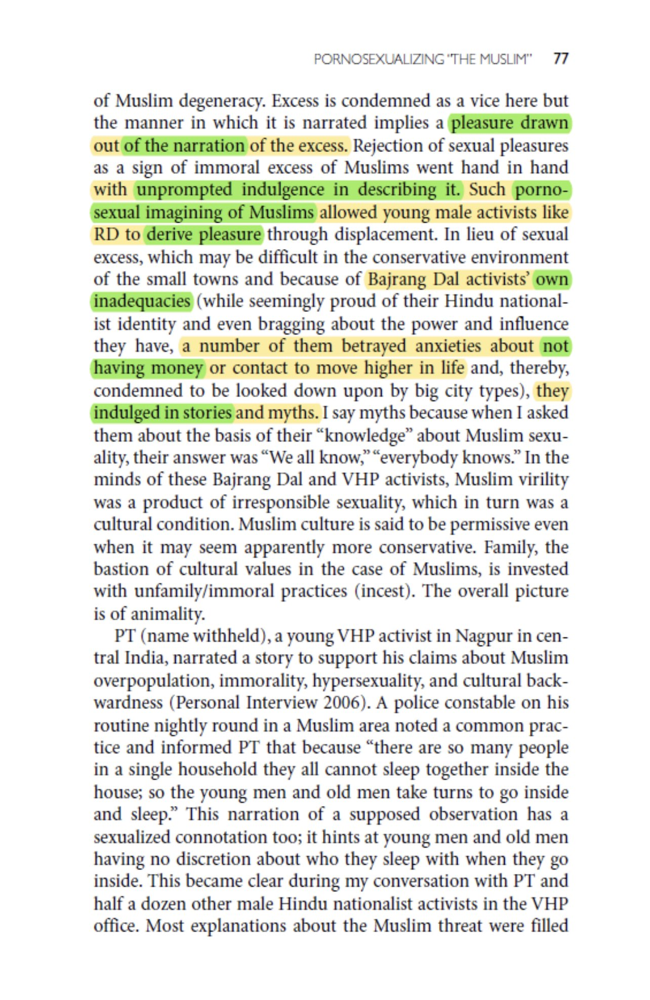
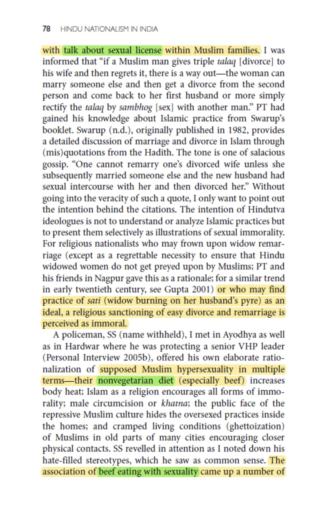
Radical hindus believe that "Muslim men are too sexy" due to eating beef and getting circumcised. And that this is what hindu girls prefer more.
They believe that Muslims are more manly than them, & the only way to compensate is to commit violence/rape.
(Anand, 2016, pg 79-80)
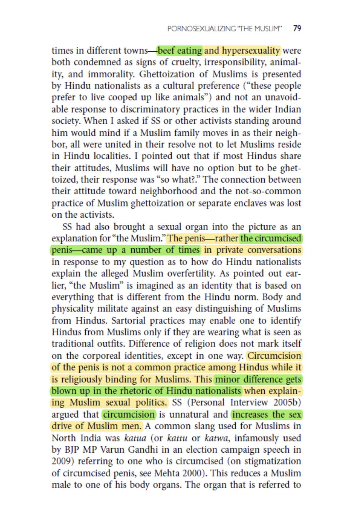
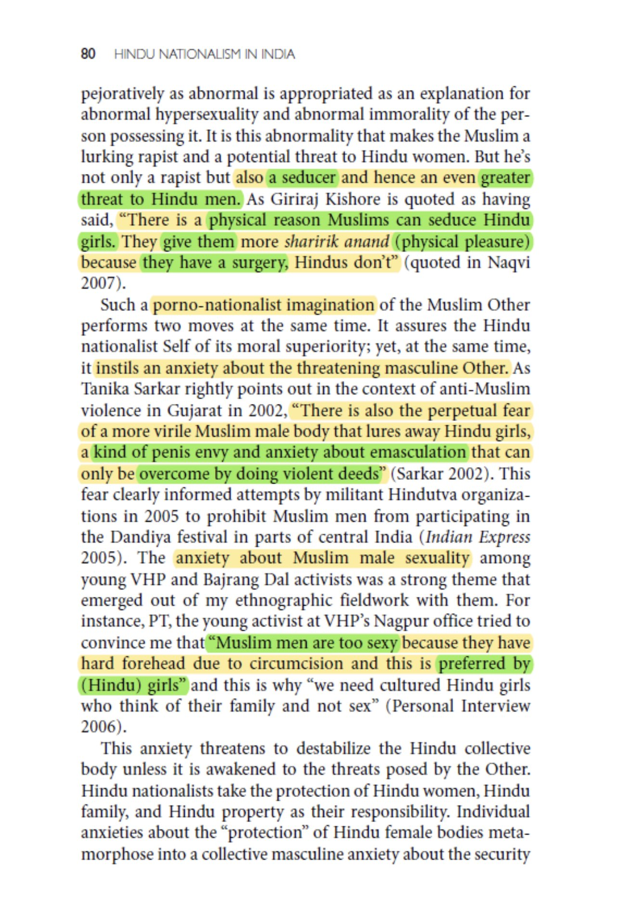
Why Hindu Women love Muslim Men
An interesting scientific paper from India, explaining why Hindu women cheat on their Hindu husbands so much
Hindu women explained that hindu men are unattractive, bad at sex, and are incels
Many hindu women rather convert to Islam to be with a Muslim
allstudyjournal.com/archives/2020.…
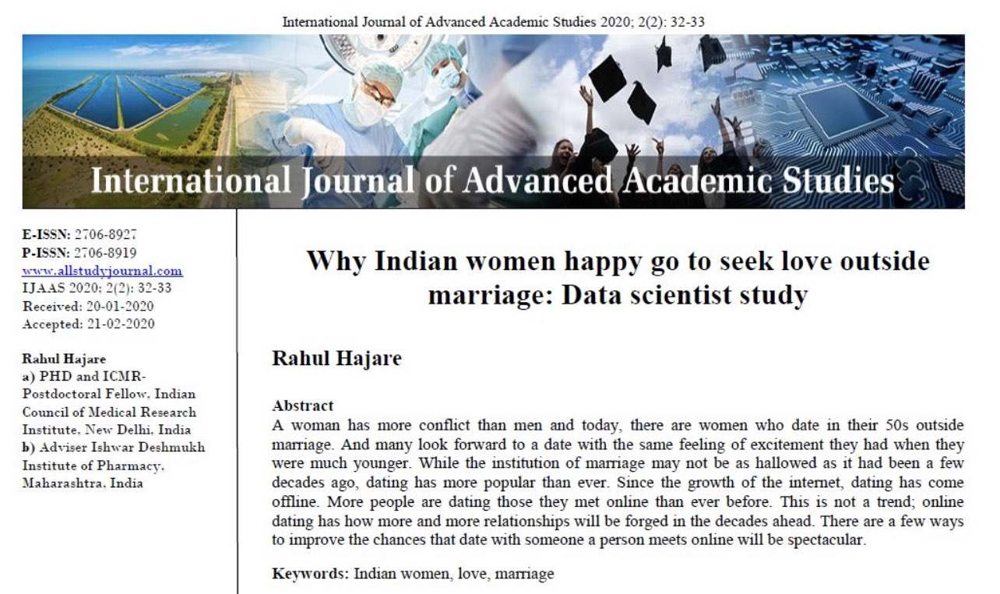
Radical Hindus and the hatred of Toilets
Scientific papers find that this behavior is due to Hindu mythology which prohibit the use of toilets
Radical hindus also do not use toilets, or let women use toilets, since toilets are an Islamic invention, & they believe it contributes to "love jihad"
journals.plos.org/plosone/articl…
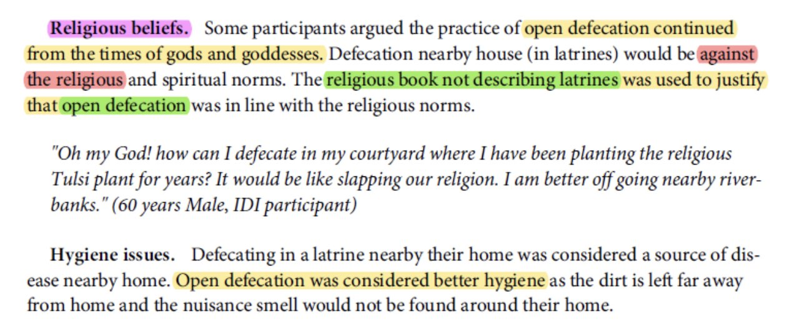
https://vedkabhed.com/index.php/2019/04/15/hindus-calling-for-massacre-of-muslims-celebrating-persecution-of-muslims/
VedKaBhed.Com
Ved Ka Bhed
Hindus Calling for Massacre of Muslims & Celebrating Persecution of...
4.3 (19) Written by Sulaiman Razvi Internet has given us the opportunity to express our views, many times internet is misused. Many people especially Hindu fanatics misuse internet by abusing other religions especially Islam even if the post is not even remotely related to Muslims. While the whole world was mourning for the […]
https://vedkabhed.com/index.php/2014/09/09/policy-of-hindutvadis/
VedKaBhed.Com
Ved Ka Bhed
Policy of Hindutvadis - VedKaBhed.Com
5 (9) Dr. Sukhpreet Singh Udoke has published a 584 page book Tabbe Ros Jagyo – A Reaction to Intellectual Invasions on Sikhism. At page 582 of the book the author has reproduced Policy Programme of RSS quoting the sources. The same is reproduced as under:- (Secret Circular of Rashtriya Swayam Sewak Sangh. HO Nagpur) […]
https://vedkabhed.com/index.php/2011/01/05/ban-on-hindu-terror-organisations/
VedKaBhed.Com
Ved Ka Bhed
Ban on Hindu terror organisations - VedKaBhed.Com
5 (7) By Sulaiman Razvi It’s really unfortunate that many Hindus label entire Muslim community as terrorists but at the same time denies the existence of Hindu terrorism. Many Hindus don’t even consider RSS, VHP, Bajrang Dal, Ram Sena, Sanatan Sanstha, Dharm Sena to be terrorists let alone condemning them, they consider all these terror […]
https://vedkabhed.com/index.php/2012/11/18/terrorism-in-india/
VedKaBhed.Com
Ved Ka Bhed
Terrorism in India - VedKaBhed.Com
5 (2) By Sulaiman Razvi Hindus often say that Muslims are the root of terrorism and wherever there are Muslims there is terrorism. Millions of Hindus are living in Muslim countries but Hindus say that all Muslim countries are violent, they say there is no peace in Muslim countries and they even tell Muslims to […]
https://vedkabhed.com/index.php/2019/03/20/violence-in-hinduism/
VedKaBhed.Com
Ved Ka Bhed
Killing Infidels in Hinduism - VedKaBhed.Com
4.4 (21) Written by Sulaiman Razvi Do mention the link of this blog when you copy any verse You may have heard a lot of Hindus saying that Hinduism is a very peaceful and tolerant religion (or the way of life as they say). Hindus say that unlike other religions (hinting at Islam […]
https://vedkabhed.com/index.php/2013/10/16/hindus-in-arab-countries/
VedKaBhed.Com
Ved Ka Bhed
Hindus in Arab Countries - VedKaBhed.Com
4.3 (6) By Sulaiman Razvi Recently a Hindu man named Mukesh Kumar working in Kuwait lost his job for hate post on Facebook against Muslims. But he is not the only Hindu who is working in a Muslim country and spewing venom against Muslims. There are many such Hindus, the most popular one is B.R […]
https://vedkabhed.com/index.php/2013/10/06/how-peaceful-are-hindus/
VedKaBhed.Com
Ved Ka Bhed
List of Attacks by Hindu Radicals - VedKaBhed.Com
4.5 (8) By Sulaiman Razvi Some Hindus accuse non Hindus of being communal and violent. Claims that only they are peaceful and most tolerant community in the world. Ironically these lines are said by them after hurling couple of abuses at other religions. Let’s have a look at communal violence perpetrated by Hindus. I am […]
https://vedkabhed.com/index.php/2014/01/01/were-buddhists-persecuted-by-hindus/
VedKaBhed.Com
Ved Ka Bhed
Were Buddhists persecuted by Hindus? - VedKaBhed.Com
4.6 (9) Written by Neer Mohammed Intolerance towards Buddhists The Brahmanical hostility towards Buddhism was a major reason of the decline of Buddhism in India, the place of its birth. It is quite true that at a later date the Brahmins accepted Buddha as one of the avataras but it was just another srewd Brahmin […]
https://vedkabhed.com/index.php/2013/12/30/hinduism-and-religious-tolerance-2/
VedKaBhed.Com
Ved Ka Bhed
Hinduism and Religious Tolerance - VedKaBhed.Com
4.8 (4) Written by Ibn Muhammad Among the most widely propagated myths in the world today is that Hinduism is the most tolerant religion and that it has had no history of persecuting the followers of other faiths. The advocates of Hinduism leave no stone unturned to make the masses believe this myth. The most […]
https://vedkabhed.com/index.php/2018/01/02/vedas-and-world-peace/
VedKaBhed.Com
Ved Ka Bhed
Vedas and World Peace Part 1 - VedKaBhed.Com
5 (5) Written by Ibn Muhammad Islam is being severely attacked, bashed, mocked by a certain dedicated team in cyberspace. A large number of these ‘Islam Haters’ happen to be Hindu fanatics. Obviously, their sole agenda is to create aversion in the minds of common people against Islam. Their full time job is to prove […]
https://vedkabhed.com/index.php/2018/01/02/vedas-and-world-peace-part-2/
VedKaBhed.Com
Ved Ka Bhed
Vedas and World Peace Part 2 - VedKaBhed.Com
5 (4) Written by Abd al-Muhsin Al Hindy In this part we will see some more heinous acts legislated by the barbaric Vedas. We’ve seen how Hindūs are ever zealous in maligning Islām, alleging it to be ‘violent’ , intolerant but have the people seen the true ‘teachings’ of this self-claimed ‘ahinsac’(non-violent) religion? Let’s read […]
https://vedkabhed.com/index.php/2014/01/02/hinduism-and-talibanism-3/
VedKaBhed.Com
Ved Ka Bhed
Hinduism and Talibanism - VedKaBhed.Com
5 (1) By Mukundan C. Menon [Source: MilliGazette ] Which is more deplorable: destruction of Buddhism in its own birth place in ancient India by Hindus, or of Buddha statues by present day Islamic Talibans in Afghanistan? Two well known academicians of Kerala – Prof KM Bahauddin, former pro-vice chancellor of Aligarh […]